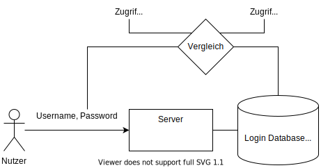
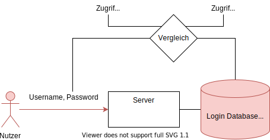
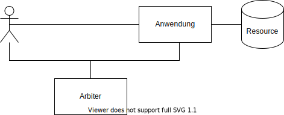
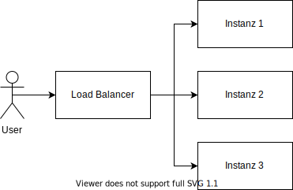
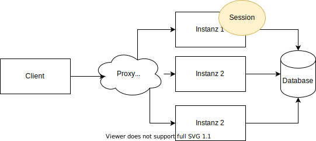
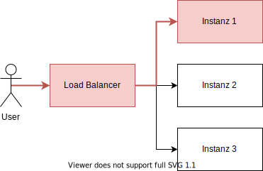
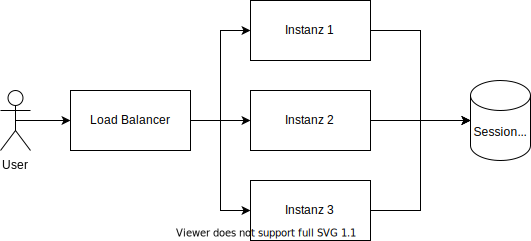
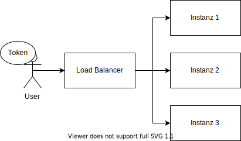
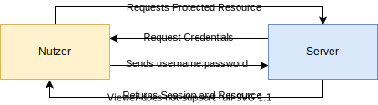
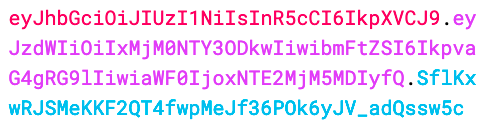

## Inhalt
* Motivation
* Zugriffskontrolle
* Authenticationfactors
* Authenticationmethods
* Standards
Zugriffstyp
Discretionary Access Control
- Benutzerzentriert
- Objektbezogen
- Typisch: Read, Write, Execute
- Lack of Competence
Mandatory Access Control
- Systemweit
- Das System dominiert
- lack of overview
Wissen: Passwort
Wissen: Passwort
Besitz
Biometrische Verfahren: Sicherheit?
Exkurs Brainwave Based Authentication
Direkt
Vorteil: Anwendung hat die Hoheit über die Daten. Nachteil: Nutzer muss der Anwendung möglicherweise mehr Daten bereitstellen (mindestens: Password).
Arbiter
Vorteil: Der Anwender muss seine persönlichen Daten gegenüber der Anwendung nicht sichtbar machen. Nachteil: Beide müssen dem Arbiter vertrauen.
### Multi Faktor: Probleme
* bei generierten Tokens (bspw. OTP, TOTP)
* Generierung sollte nicht auf gleichem Gerät stattfinden wie auf dem Benutzergerät
Speicherung der Sessions
#### Cookies
* Zustimmung erforderlich
* Session Riding nicht möglich
#### URL-Rewriting
* Client unanbhängig
* Session-ID offensichtlich
* Gefahr durch "Session Riding"
Probleme in verteilten Anwendungen
Probleme in verteilten Anwendungen
### Mögliche Lösungen * Nutzer wird nach der initialen Zuweisung an eine Instanz dauerhaft gebunden * Sessions werden Instanz übergreifend gespeichert * Session Gateway * Session ist tokenbasiert beim Nutzer
Instanzbindung
Instanzübergreifend
Sessiongateway
Tokenbasierte Sessions
HTTP Basic Authentication: Ablauf

#### Authorisation
gewährt Usern Zugriff auf Resourcen
#### Authentication
stellt sicher, dass der Nutzer auch wirklich der ist für den er sich ausgibt
Terminologie
SAML
* Client
* Identity Provider (IDP)
* Service Provider (SP)
OAuth2
* Client
* Authorisation Server
* Resource Server
#### Security Assertion Markup Language
* XML basiertes Authentication Protokoll
* Single Sign On (SSO)
* Optional Single Sign Off (SLO)
* Identity Management
#### OAuth2
* meist JSON Web Tokens (JWT)
* Client muss nicht zwingend ein Browser sein
* Autorisierungsprotokoll
* Access and Refreshtokens
Aufbau JWT

### Token lifecycle
1. JWT wird mit Header und Payload wird vom Autorisierungsserver bestückt
2. Autorisierungsserver signiert den Token mit dem Secret und sendet ihn an den Client
3. Client sendet den Token an die Anwendung
4. Anwendung prüft mithilfe des Secret den Token